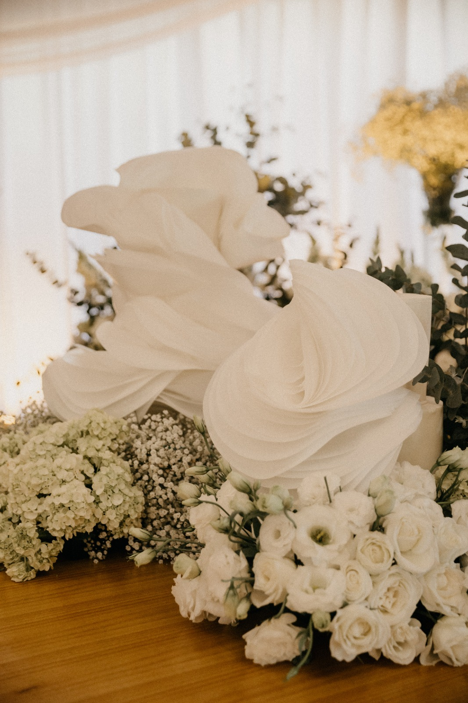
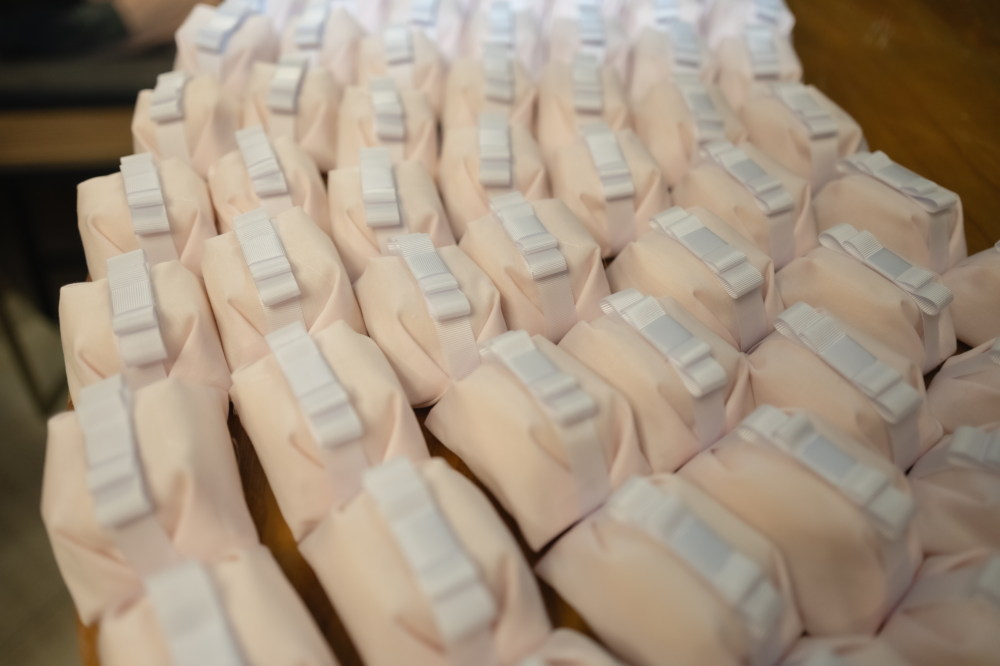
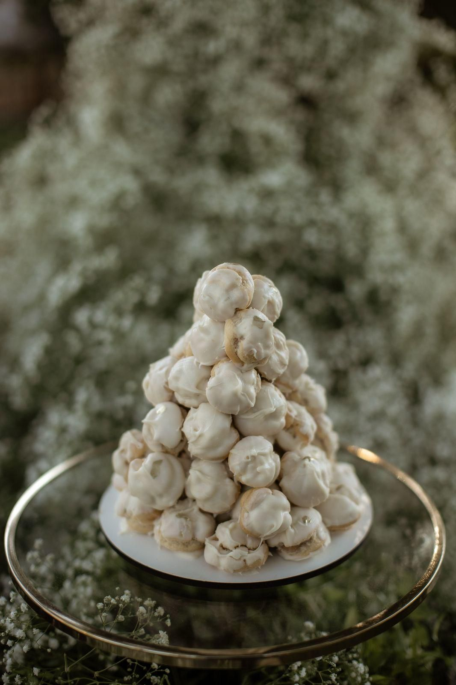
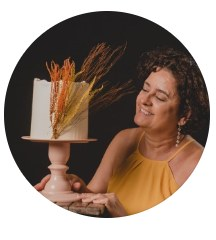
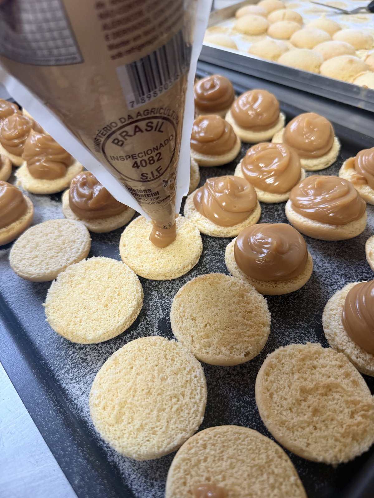
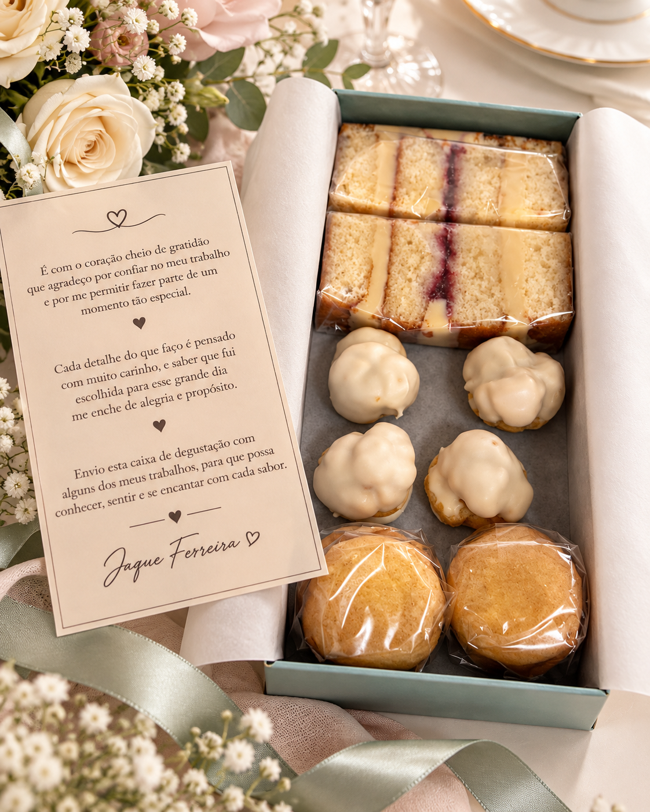

01Bolos
Eu desenho camadas, texturas e acabamentos para o seu bolo chegar antes de qualquer palavra.
Feito à mão em Ubá
Eu crio bolos, bem-casados e carolinas autorais para a sua data ser vivida por inteiro: com beleza, cuidado e um sabor que continua na memória.



porJacquelineEu faço cada camada à mão, do seu jeito.
Quando você me procura, eu sei que não está escolhendo só uma sobremesa. Você está escolhendo como quer que a sua data seja lembrada — pela beleza, pelo aroma, pela textura e, principalmente, pelo sabor.
Por isso eu penso em cada criação para combinar com o seu momento: do bolo que chega no centro das atenções à caixa que vira presente e começa uma conversa.
Quero criar o seu momentoEu quero entender o que você está vivendo para criar algo que faça sentido para a sua ocasião — nos olhos, nas mãos e no paladar.

01Eu desenho camadas, texturas e acabamentos para o seu bolo chegar antes de qualquer palavra.

02Eu preparo o clássico macio e delicado para você oferecer como um gesto que fica.
Eu faço carolinas delicadas, recheadas na medida, para encantar a sua mesa.

Eu montei esta box para você experimentar minhas carolinas e bem-casados com calma, escolher os seus favoritos e tomar a decisão com segurança — porque só beleza não basta quando a data precisa ser marcada por todos os sentidos.
Uma opção sob encomenda, com custo próprio.
Peça a sua box degustaçãoEu separei as quatro primeiras publicações do meu feed para você continuar conhecendo meu trabalho direto no meu Instagram.
Eu deixei este espaço para receber os prints de quem já viveu uma encomenda comigo. Porque a sua experiência também ajuda outra pessoa a escolher com o coração tranquilo.
Enviar um feedbackVocê chega com uma vontade e eu transformo essa ideia em uma encomenda com começo, meio e aquele detalhe que faz tudo fazer sentido.
Você me conta a ocasião, o número de pessoas e o que imaginou. Eu começo por aí.
Eu encontro os sabores, o acabamento e a composição que combinam com o seu momento.
Eu entrego uma criação feita no tempo certo, pronta para marcar a sua memória.
Eu quero te ouvir
Me conte o que você está celebrando. Se quiser conhecer meu trabalho antes de decidir, eu preparo a box degustação com carolinas e bem-casados — uma opção sob encomenda, com custo próprio.
Peça a sua box degustação